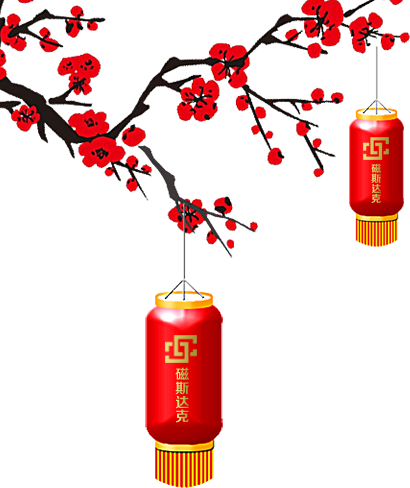

2015
回顾
5月，正式成立。在4个月的紧张研发后，磁斯达克在9月13日召开发布设立大会；
至2015年底，磁斯达克仅仅用了三个月的时间，作为私人投资人的独家财务顾问完成累计人民币4900万的投资；
作为一家医疗机构的独家交易顾问协助完成过亿元的投资，同时完成了第一期和第二期两只专项基金的募集。
2016
展望
2016年磁斯达克的第一个目标，是将投资的全过程，例如投前准备阶段，投资中项目管理，和投后收尾工作全程在线化。
同时，磁斯达克将致力于基金管理规模的成倍扩大，在今年形成磁斯达克超级母基金，并将以此为基础开始产业整合。这个超级基金池也将为散落在各个金融机构的顶尖投资经理提供机会，磁斯达克希望能与所有优秀的投资经理进行合作，取得共赢。
祝大家新春快乐！